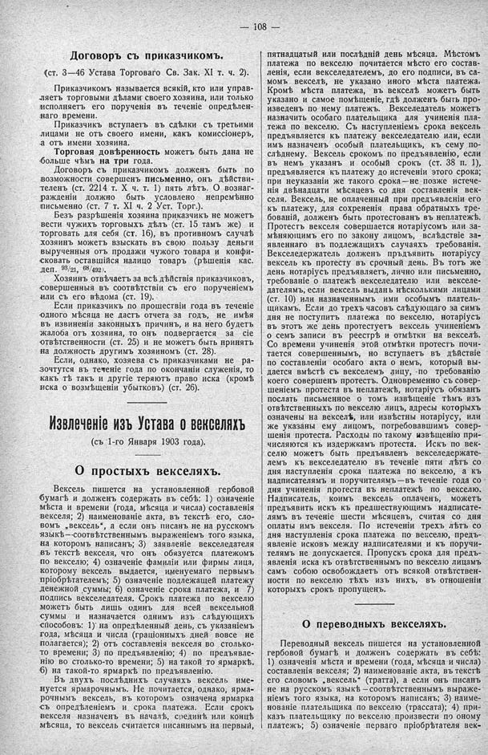

Лист источника 154
Скан

Распознанный текст
108
Договоръ съ приказчикомъ.
(ст. 3—46 Устава Торговаго Св. Зак. ХІ т. ч. 2).
Приказчикомъ называется всякій, кто или управ-
ляетъ торговыми дѣлами своего хозяина, или только
исполняетъ его порученія въ теченіе опредѣлен-
наго времени.
Приказчикъ вступаетъ въ сдѣлки съ третьими
лицами не отъ своего имени, какъ комиссіонеръ,
а отъ имени хозяина.
Торговая довѣренность можетъ быть дана не
больше чѣмъ на три года.
Договоръ съ приказчикомъ долженъ быть по
возможности совершенъ письменно, онъ дѣйстви-
теленъ (ст. 2214 т. Х ч. т. 1) пять лѣтъ. О вознаг-
рожденіи должно быть условлено непремѣнно
письменно (ст. 7 т. ХІ ч. 2 Уст. Торг.).
Безъ разрѣшенія хозяина приказчикъ не можетъ
вести чужихъ торговыхъ дѣлъ (ст. 15 тамъ же) и
торговать для себя (ст. 16), въ противномъ случаѣ
хозяинъ можетъ взыскать въ свою пользу деньги
вырученныя отъ продажи чужого товара и конфи-
сковать оставшійся налицо товаръ (рѣшенія кас.
деп. 93/21, 68/492).
Хозяинъ отвѣчаетъ за всѣ дѣйствія приказчиковъ,
совершенныя въ соотвѣтствіи съ его порученіемъ
или съ его вѣдома (ст. 19).
Если приказчикъ по прошествіи года въ теченіе
одного мѣсяца не дастъ отчета за годъ, не имѣя
въ извиненіи законныхъ причинъ, и на него будетъ
жалоба отъ хозяина, то онъ подвергается за сіе
отвѣтственности (ст. 25) и не можетъ быть принятъ
на должность другимъ хозяиномъ (ст. 28).
Если, однако, хозяева съ приказчиками не ра-
зочтутся въ теченіе года по окончаніи служенія, то
какъ тѣ такъ и другіе теряютъ право иска (кромѣ
иска о возмѣщеніи убытковъ) (ст. 26).
Извлеченіе изъ Устава о векселяхъ
(съ 1-го Января 1903 года).
О простыхъ векселяхъ.
Вексель пишется на установленной гербовой
бумагѣ и долженъ содержать въ себѣ: 1) означеніе
мѣста и времени (года, мѣсяца и числа) составленія
векселя; 2) наименованіе акта, въ текстѣ его, сло-
вомъ „вексель“, а если онъ писанъ не на русскомъ
языкѣ—соотвѣтственнымъ выраженіемъ того языка,
на которомъ написанъ; 3) заявленіе векселедателя
въ текстѣ векселя, что онъ обязуется платежомъ
по векселю; 4) означеніе фамиліи или фирмы лица,
которому вексель выдается, именуемаго первымъ
пріобрѣтателемъ; 5) означеніе подлежащей платежу
денежной суммы; 6) означеніе срока платежа, и 7)
подпись векселедателя. Срокъ платежа по векселю
можетъ быть лишь одинъ для всей вексельной
суммы и назначается однимъ изъ слѣдующихъ
способовъ: 1) на опредѣленный день, съ указаніемъ
года, мѣсяца и числа (граціонныхъ дней вовсе не
полагается); 2) отъ составленія векселя во столько-
то времени; 3) по предъявленію; 4) по предъявле-
нію во столько-то времени; 5) на такой то ярмаркѣ.
6) на такой-то ярмаркѣ по предъявленію.
Въ двухъ послѣднихъ случаяхъ вексель име-
нуется ярмарочнымъ. Не почитается, однако, ярма-
рочнымъ вексель, въ которомъ означена ярмарка
съ опредѣленіемъ и срока платежа. Если срокъ
векселя назначенъ въ началѣ, срединѣ или концѣ
мѣсяца, то вексель считается писаннымъ на первый,
пятнадцатый или послѣдній день мѣсяца. Мѣстомъ
платежа по векселю почитается мѣсто его состав-
ленія, если векселедателемъ, до его подписи, въ са-
момъ векселѣ, не указано иного мѣста платежа.
Кромѣ мѣста платежа, въ векселѣ можетъ быть
указано и самое помѣщеніе, гдѣ долженъ быть про-
изведенъ по нему платежъ. Векселедатель можетъ
назначить особаго плательщика для учиненія пла-
тежа по векселю. Съ наступленіемъ срока вексель
предъявляется къ платежу векселедателю или, если
имъ назначенъ особый плательщикъ, къ сему по-
слѣднему. Вексель срокомъ по предъявленію, если
въ немъ указанъ и особый срокъ (ст. 38 п. 1),
предъявляется къ платежу до истеченіи этого срока;
при неуказаніи же такого срока—не позже истече-
нія двѣнадцати мѣсяцевъ со дня составленія век-
селя. Вексель, не оплаченный при предъявленіи его
къ платежу, для сохрененія права обратныхъ тре-
бованій, долженъ быть протестованъ въ неплатежѣ.
Протестъ векселя совершается нотаріусомъ или за-
мѣняющимъ его по закону лицомъ, вслѣдствіе за-
явленнаго въ подлежащихъ случаяхъ требованія.
Векселедержатель долженъ предъявить нотаріусу
вексель къ протесту въ срочный день. Въ тотъ же
день нотаріусъ предъявляетъ, лично или письменно,
требованіе о платежѣ векселедателю или векселе-
дателямъ, если вексель выданъ нѣсколькими лицами
(ст. 10) или назначеннымъ ими особымъ платель-
щикамъ. Если до трехъ часовъ слѣдующаго за симъ
дня не поступитъ платежа по векселю, нотаріусъ
въ этотъ же день протестуетъ вексель учиненіемъ
о семъ записи въ реестрѣ и отмѣтки на векселѣ.
Со времени учиненія этой отмѣтки протестъ почи-
тается совершеннымъ, но вступаетъ въ дѣйствіе
по составленіи особаго акта о немъ, который вы-
дается вмѣстѣ съ векселемъ лицу, по требованію
коего совершенъ протестъ. Одновременно съ совер-
шеніемъ протеста въ неплатежѣ, нотаріусъ обязанъ
послать письменное о томъ извѣщеніе тѣмъ изъ
отвѣтственныхъ по векселю лицъ, адресы которыхъ
означены на векселѣ, или извѣстны нотаріусу, или
же указаны ему лицомъ, потребовавшимъ совер-
шенія протеста. Расходы по такому извѣщенію при-
числяются къ издержкамъ протеста. Искъ по век-
селю можетъ быть предъявленъ векселедержате-
лемъ къ векселедателю въ теченіе пяти лѣтъ со
дня наступленія срока платежа по векселю, а къ
надписателямъ и поручителямъ—въ теченіе года со
дня учиненія протеста въ неплатежѣ по векселю.
Надписатель, коимъ вексель оплаченъ, можетъ
предъявить искъ къ предшествующимъ надписате-
лямъ въ теченіе шести мѣсяцевъ, считая со дня
оплаты имъ векселя. По истеченіи трехъ лѣтъ со
дня наступленія срока платежа по векселю, предъ-
явленіе исковъ между надписателями и къ поручи-
телямъ не допускается. Пропускъ срока для предъ-
явленія иска къ отвѣтственнымъ по векселю лицамъ
самъ собою освобождаетъ отъ всякой отвѣтствен-
ности по векселю тѣхъ изъ нихъ, въ отношеніи
которыхъ срокъ пропущенъ.
О переводныхъ векселяхъ.
Переводный вексель пишется на установленной
гербовой бумагѣ и долженъ содержать въ себѣ:
1) означенія мѣста и времени (года, мѣсяца и числа)
составленія векселя; 2) наименованіе акта, въ текстѣ
его словомъ „вексель“ (тратта), а если онъ писанъ
не на русскомъ языкѣ—соотвѣтственнымъ выраже-
ніемъ того языка, на которомъ написанъ; 3) наиме-
нованіе плательщика по векселю (трассата); 4) при-
казъ плательщику по векселю произвести по оному
платежъ; 5) означеніе перваго пріобрѣтателя век-